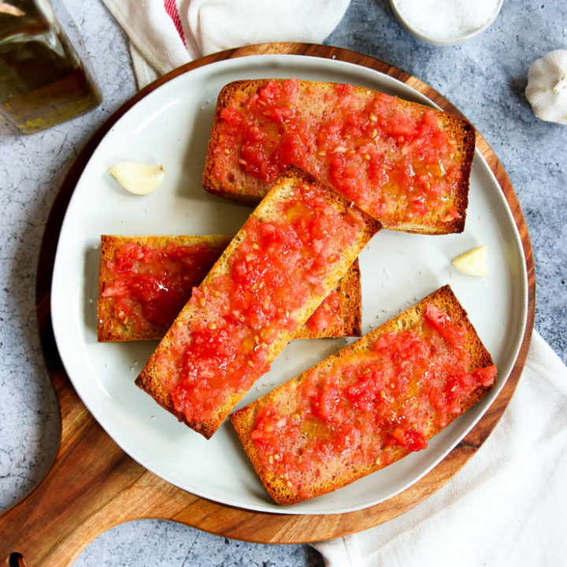

Pan con tomate (Spanish tomato bread)

Prep:5 mins
Cook:5 mins
Serves:1
Pan con tomate is a traditional Spanish dish from Catalan made with toasted bread seasoned
with fresh garlic and topped with ripe chopped tomatoes, olive oil, and sea salt. One bite takes me
back to my student days in Barcelona...what a treat!
Quick tip: Use the best tomatoes you can as that is where the flavour is! Slightly stale
bread works best as it will soak up the delicious tomato juices..yum!
Ingredients
- 1 large, ripe tomato, chopped
- 2 slices crusty bread
- 1 garlic clove, halved
- 1 tbsp extra-virgin olive oil
- sea salt to taste
Steps
- Place tomato in a blender; blend until smooth.
- Toast the bread until browned, 1 to 3 minutes. Rub each slice of toast with garlic; this is
easier to do if the peel is left on.
- Top each slice of toast with pureed tomato. Drizzle with olive oil and sprinkle with salt.
Buen aprovecho!